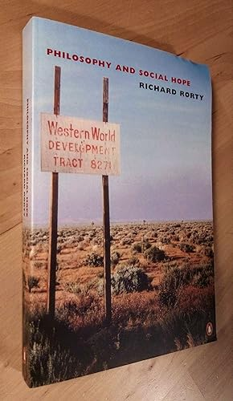
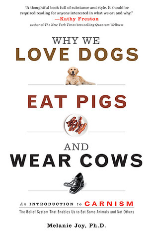

this page was hand-typed. the CSS is a compost heap.
Browse the shelf
Filter, search, shuffle, or let the dice pick. Sections are sorted by the era of me that made them.
tags:
0 books showing. Enter jumps to search, Esc clears everything.
rating systems are inconsistent across this page because i changed my mind about rating systems roughly four times. the stars, the paw prints and the percentages do not convert.
DUE BACK NEVER
Shelf 01 — The ones that rearranged my head
est. 2009 ● philosophy, mostly ● card-catalogue styling, shhh i went through a phase ● ratings out of five stars

Philosophy and Social Hope
Richard Rorty ● 1999 ● read three times, argued about twice that
★★★★★
the long version
Initially drawn to uncovering a universal law to explain historical and political phenomena, I was once captivated by theories suggesting that humans operated under fixed principles. Over time, and influenced by Rorty, my perspective shifted. I came to reject essentialism and foundationalism and embraced a more pluralistic, dynamic understanding of human behaviour. I came to also recognise language and discourse as central to our interaction with the world.
This book is the best possible introduction to Rorty, clear and digestible philosophy that is relevant to people's everyday thinking. Rorty's relativistic view, which might unsettle some, resonates deeply with me, as it reveals a world where fixed truths give way to discourse and practical utility. He argues that our beliefs do not mirror reality but are responses to cope with it. This framework dismisses the need for a unified appearance-reality distinction, given that we assess our beliefs based on their usefulness in achieving our goals. In this light, the sciences and religion serve different purposes and need not be reconciled.
What I've learned from Rorty, beyond any previous academic lesson, is the value of reinterpreting our worldviews. He masterfully anticipates and integrates criticism into his philosophy by suggesting that, when foundational truths are contested, what remains is a choice between what serves our ends best. The quote I keep coming back to is downstairs, in the shrine. Yes, there is a shrine.
Achieving Our Country: Leftist Thought in Twentieth-Century America
Richard Rorty ● 1998 ● the angrier, more useful sibling of the one above
★★★★☆
the long version
Rorty critiques the American Left for straying from its pragmatic roots of hope and inclusive, class-centered patriotism, towards abstract critique and passive cynicism. He reminisces about an earlier Left, aligned with figures like Dewey and Whitman, which championed solidarity and progress.
Rorty acknowledges America's dual history of progress and atrocity but sees these as failures of imagination rather than inherent sin, arguing for continued constructive engagement over condemnation. He sees America as an evolving project that should learn from past injustices without being paralysed by them, urging a move away from theoretical detachment towards active policy-making and reform.
Ian Hacking ● 1999 ● a referee's whistle in the culture wars
★★★★☆
the long version
So, you know how there's always been this big ol' debate between scientists and philosophers about what's real and what's just a social construct? Hacking jumps right into the middle of that mess and starts poking around for some answers. He's got a great way of breaking things down, using anecdotes and analysis to make some pretty complex ideas feel a lot more accessible.
One thing that caught my attention was how he compares this Science Wars business to the old nominalist versus structuralist debate. I don't want to get too bogged down in the details, but basically, nominalists think that reality is whatever we say it is, while structuralists believe that there's some deeper truth beneath the surface. Hacking's take is that, yeah, there might be some objectivity to science, although the way we go about figuring out what's true is definitely influenced by society.
What Hacking's trying to do here is get us to think more critically about how we categorise things. He wants us to look beyond the obvious and consider all the social forces that shape our understanding of reality.
Now, I know some people might be thinking, "isn't this social construction stuff just a bunch of postmodern mumbo-jumbo?" Honestly, I can see why you'd think that. Hacking's approach is different though. He isn't trying to tear down the whole system, he just wants us to be more aware of how our beliefs and values influence the way we see the world.
Available Light: Anthropological Reflections on Philosophical Topics
Clifford Geertz ● 2000 ● the tangents are the point
★★★★☆
the long version
Clifford Geertz doing philosophy, what's not to like? Philosophy of anthropology, anthropology of philosophy? Being a work of reflection, Geertz isn't afraid of going on tangents.
I'm hesitant to recommend this because a lot of background knowledge is needed to appreciate some of the essays. The literary style makes it accessible to most people anyway.
Isaiah Berlin ● 1978 ● gateway drug to the whole 19th century
★★★★★
the long version
Fascinating insights into the 19th century Russian intelligentsia. I was particularly amused by how many of them used literature as a tool for liberation, seeing that it was the only medium available to them for social criticism.
Berlin does a profoundly good job at making such a dense subject extremely entertaining.
. * . . * . * . . *
* .-----------------------------------------------------. .
. | scroll down, the styling gets worse and then better | *
. '-----------------------------------------------------' .
Shelf 02 — People who were there
memoirs ● made this section on a train ● serif fonts because it felt respectful ● rating: out of ten, don't ask why
My Past and Thoughts
Alexander Herzen ● 800-odd pages ● currently lent out, currently regretted
10 / 10
why this one
Memoirs of the 19th century Russian intellectual and revolutionary. Deeply personable, vibrant with life and history. I have read dozens of memoirs and autobiographies. This one is a literary masterpiece.
If you only take one book off this page, take this one. Then give it back.
A memoir written by a young German watching his country descend into Nazism, month by month, from inside an ordinary life. The literary style and the writing are particularly brilliant.
What stays with me is the granularity. It is not about the machinery of the state, it is about what happens to a tennis match, a law exam, a friendship.
I have typed this out for people so many times that it now lives here permanently.
We pragmatists cannot make sense of the idea that we should pursue truth for its own sake. We cannot regard truth as a goal of inquiry. The purpose of inquiry is to achieve agreement among human beings about what to do, to bring about consensus on the ends to be achieved and the means to be used to achieve those ends. Inquiry that does not achieve coordination of behaviour is not inquiry but simply wordplay. To argue for a certain theory about the microstructure of material bodies, or about the proper balance of powers between branches of government, is to argue about what we should do: how we should use the tools at our disposal in order to make technological, or political, progress. So, for pragmatists there is no sharp break between natural science and social science, nor between social science and politics, nor between politics, philosophy and literature. All areas of culture are parts of the same endeavour to make life better.
Richard Rorty, Philosophy and Social Hope
✶ ✶ ✶
>> THE WEIRD WING
built 2016 ● horror that refuses to behave ● i have not changed a single pixel of this section since and i won't ● rated in dread, out of five
Songs of a Dead Dreamer and Grimscribe
Thomas Ligotti ● 33 stories ● the entry point
☠☠☠☠☠
[ open transmission ]
Ligotti is now mentioned in the same breath as Poe, Lovecraft and Kafka. He has a pretty unique style that sets him apart, though. This anthology is a window into his eerie genius.
Some people call his stuff "cosmic horror", however it's so much more than that. Sure, there are sci-fi elements and ancient mythology thrown in, but ultimately Ligotti's work is about the human condition, and it isn't always pretty. Check this out. The writing alone is worth it even if weird fiction isn't your genre.
Kafka meets Poe, without the sappy romance. Ligotti's stories are laced with black humour, although you shouldn't expect to be scared in a traditional way. These tales are cerebral. They dig into the grey matter between your ears rather than merely entertaining you.
His prose, by turns wry, pessimistic and bitingly sarcastic, is nonetheless beautiful. Chef's kiss. More than perfect. You'll encounter stories that are metaphorical and allegorical, set in strange towns, surreal scenarios, and the monotonous cruelty of daily life. You will read this :)
Aickman's stories are super immersive, with a richness that'll suck you right in. They're also kinda... weird. You'll be reading along, and suddenly things get a lot inexplicable. You'll be left wondering whether you missed something.
These aren't your usual bump-in-the-night stories, and they're not Stephen King horrors either. There's no gore and no cheap scares, and the villains never announce themselves. They're more refined, yet no less chilling for the subtlety. Aickman builds worlds you feel you know, then lets you slip through the cracks of reality when you least expect it. If you're looking for something a little different, a little odd, a little WTF, this collection is for you.
Brian Evenson ● 2019 ● unclassifiable, deliberately
☠☠☠☠☡
[ open transmission ]
Evenson's collection is impossible to pin down. Horror, but not the jump-scare kind. Some stories have aliens and shenanigans that feel more at home in sci-fi, although they aren't really that either.
The atmosphere is uncanny in a timeless way, like it's all going down in a parallel universe. You're never sure whether you're in the past, the future, or some other creepy dimension a stone's throw from our own. Evenson doesn't give you everything at once, he drops little breadcrumbs that make your skin crawl and leaves the rest for your brain to trip over later. There's one story about a girl with no face, another about a man convinced he's being watched constantly. You start seeing those things out of the corner of your eye even after you finish the book.
photocopied flyer aesthetic ● made this while volunteering :D ● the highlighter is important ● no ratings here for obvious reasons

Why We Love Dogs, Eat Pigs, and Wear Cows
Melanie Joy ● the book that named the thing
READ IT
what's inside
Joy delves into the psychological and societal mechanisms that lead to selective compassion when it comes to animals. A provocative and enlightening read that questions the ethics and traditions of our food choices.
Singer's groundbreaking work has been a vital force in the animal rights movement. It challenges the ethical foundation of our treatment of animals and remains a thought-provoking resource on animal ethics decades later.
David Graeber ● on technology, stupidity and the secret joys of bureaucracy
READ IT
what's inside
Premise: paperwork sucks and bureaucracy stifles all creativity, imagination and innovation. Oh, and there has barely been any technological progress in the past century. Also capitalism sucks. Also the assumption that capitalism equals free market equals deregulation equals anti-bureaucracy equals libertarianism or right wing, is not sound.
Of course the book is much more nuanced and interesting than this straw man version, and definitely worth reading.
i keep meaning to split the animal ethics shelf into "arguments" and "reporting" but every time i open the HTML i get distracted and change a font instead.
♥ the drawer of things that fit nowhere ♥
newest section ● no organising principle ● how do i make the cards not crooked ● ratings in paw prints out of five, i don't want to talk about it
Fevre Dream
George R. R. Martin ● vampires on a Mississippi steamboat
🐾🐾🐾🐾
pitch
A vampire novel by GRRM, and not the cheesy 500-year-old-vampire-falls-for-a-highschool-girl type (ahem, Twilight).
In post-apartheid South Africa, Lurie, a university lecturer, is disgraced for hooking up with his student. He retreats to the country to live with his daughter. There, they experience her gruelling rape. He turns to working in an animal welfare clinic whose main role is to kill dogs and cats, and he takes it upon himself to incinerate the animals so they are spared posthumous humiliation.
The book is full of allegories, human emotions and insights on the post-apartheid transitory period and the shifting racial power dynamics between whites and blacks, both of whom undergo instances of disgrace.
Horace McCoy ● 1935 ● the bleakest title in literature, and it's a question
🐾🐾🐾🐾🐾
pitch
An existential novel set during the Great Depression. Gloria Beatty and her boyfriend participate in a gruelling dance marathon contest that drags on for weeks, all to win the $1000 prize money or be noticed by studio producers and movie stars.
At one point Gloria asks why all these high-powered scientists spend their time trying to prolong life instead of finding pleasant ways to end it. The novel closes on the question in the title. It is meant to depict the helplessness people felt during the Depression, working incredibly hard in a rat race to the top and ending up nowhere.
 Home
Home About
About Entries
Entries Chat
Chat Kool Webpages
Kool Webpages Guestbook
Guestbook Kool Books
Kool Books Truth Table
Truth Table Contact
Contact